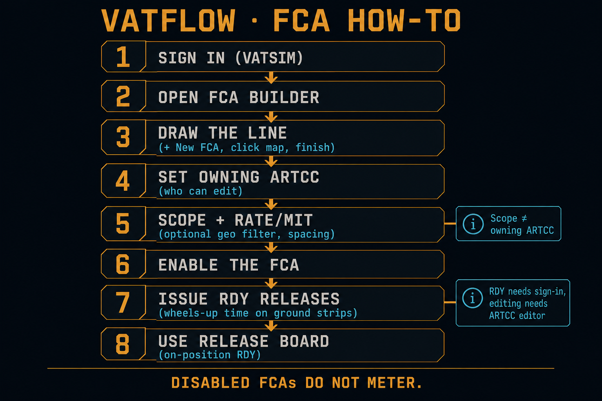
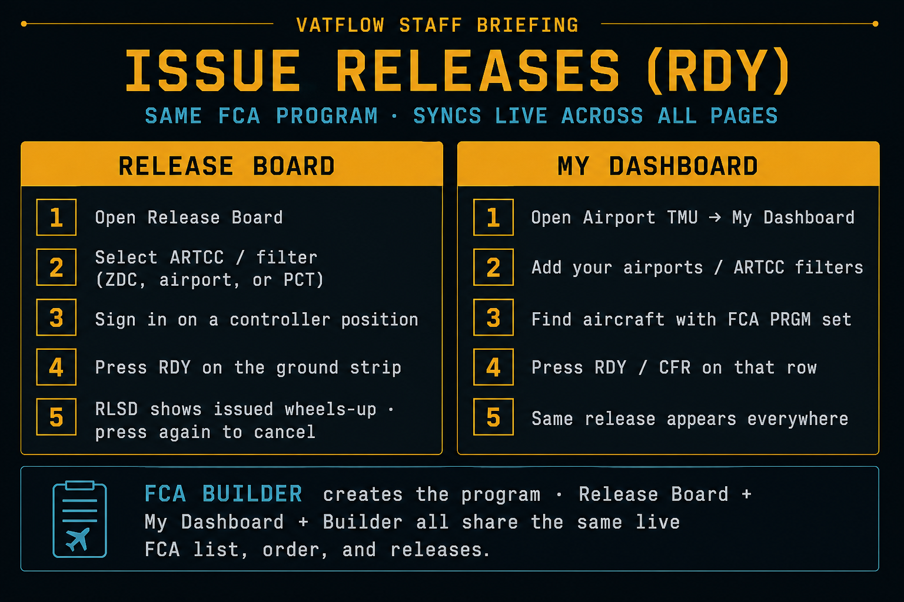

VATFLOW · Staff briefing
FCA How-To
One path from creating a Flow Constrained Area to issuing ground releases. Follow the numbers.

Sign in with VATSIM. Anyone signed in can press RDY. Creating or editing an FCA needs ARTCC editor access for that facility.
-
1
Open FCA Builder
Use the top nav → FCA Builder. This is where programs are drawn and enabled.
Tool · FCA Builder -
2
Create the FCA
Click ＋ New FCA. Click the map to place points (at least 2). Double-click or press Enter to finish. Esc cancels.
Action · Draw the metering line -
3
Set owning ARTCC
Tag the facility that owns this program (e.g. ZDC). Scoped editors can only edit FCAs for their ARTCC.
Required · Access control -
4
Scope, rate / MIT, filters
Scope (optional) = aircraft must be inside listed ARTCC(s) to be metered. Separate from owning ARTCC.
Settings · Who gets metered & how tight
Set Rate (aircraft/hour) and/or MIT, plus dest/origin/fix/FL filters so the right traffic is included. -
5
Enable the FCA
Turn it on when ready. Disabled FCAs do not meter. Aircraft only join when their filed route crosses the line.
Go live · Sequencing starts -
6
Work the sequence
Select the FCA → sequence panel. Airborne = nearest to the line first. Ground strips show proposed release spacing. Drag to reorder if you can edit.
Panel · Order & gaps -
7
Issue releases (RDY)
Press RDY on a ground departure to freeze a wheels-up time. Optional HHMMz floor = release at or after that time. Press again (RLSD ✕) to cancel. You can also issue from Release Board or My Dashboard — see below.
Same release · every page -
8
On position → pick a release page
Release Board for ARTCC-wide metered strips, or My Dashboard (Airport TMU) for your personal airport list. Build/edit programs stays in FCA Builder.
Tools · Release Board · My Dashboard
Owning ARTCC = who may edit the program.
Scope = optional geographic filter for which aircraft are metered.
Issue releases
Two ways to RDY once an FCA is enabled. Same program, same sequence, same times — everywhere.

FCA Builder, Release Board, My Dashboard, and Departures share one live FCA list — order, RDY / RLSD times, and cancels update for everyone in realtime. Create and edit the line in FCA Builder; issue releases from whichever page you are working.
Release Board
- Open Release Board
- Select your ARTCC / filter (center, airport, or PCT)
- Sign in while online on a controller position
- Press RDY on the ground strip
- RLSD = issued wheels-up · press again to cancel
My Dashboard
- Open Airport TMU → My Dashboard
- Add your departure airports / ARTCC filters
- Find rows with FCA PRGM set
- Press RDY / CFR on that row
- Same release shows on Builder + Release Board
Which tool?
- FCA Builder — draw, configure, enable programs · Open
- Release Board — on-position RDY for metered departures · Open
- My Dashboard — personal airport list + RDY when FCA PRGM is set · Airport TMU
- Airport TMU — destination capacity / CFR · FCA metering wins when FCA PRGM is set · Open